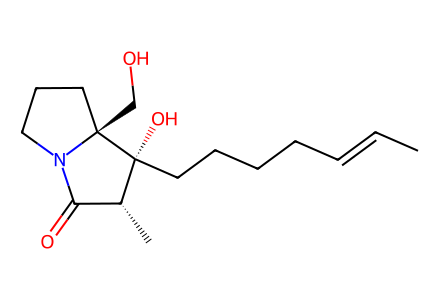
C/C=C/CCCC[C@@]1(O)[C@H](C)C(=O)N2CCC[C@@]21CO18 molecular records; 10 preparation events; 2 selected paths. All displayed successful forward transformations from known chiral 8 and the racemic exploration from 10. The four-step literature preparation 9 to 8 is only cited, not expanded into guessed intermediates; the natural-product route starts at 8. SI procedures are not locally available, so conditions and stereobonds are bounded to main Schemes 1-3.
完整 JSON · 逐步 CSV · 路线序列 · SDF · HRMS 核对
| 事件 | 分子连接 | 报告产率 | Canonical reaction SMILES |
|---|---|---|---|
| E01 | 8 + weinreb-amine → 11 | 11: 78% | CNOC.COC(=O)[C@@]1(COCc2ccccc2)CCCN1C(=O)OC(C)(C)C>>CON(C)C(=O)[C@@]1(COCc2ccccc2)CCCN1C(=O)OC(C)(C)C |
| E02 | 11 + alkenyl-Grignard → 7 | 7: 55% | C/C=C/CCC[CH2][Mg][Br].CON(C)C(=O)[C@@]1(COCc2ccccc2)CCCN1C(=O)OC(C)(C)C>>C/C=C/CCCCC(=O)[C@@]1(COCc2ccccc2)CCCN1C(=O)OC(C)(C)C |
| E03 | 7 + propionyl-chloride → 6b | 6b: 63% | C/C=C/CCCCC(=O)[C@@]1(COCc2ccccc2)CCCN1C(=O)OC(C)(C)C.CCC(=O)Cl>>C/C=C/CCCCC(=O)[C@@]1(COCc2ccccc2)CCCN1C(=O)CC |
| E04 | 6b → 13a + 13b-mixture | 13a: 51%; 13b-mixture: 7% | C/C=C/CCCCC(=O)[C@@]1(COCc2ccccc2)CCCN1C(=O)CC>>C/C=C/CCCC[C@@]1(O)[C@H](C)C(=O)N2CCC[C@@]21COCc1ccccc1.C/C=C/CCCC[C@]1(O)C(C)C(=O)N2CCC[C@@]21COCc1ccccc1 |
| E05 | 13a → 1 | 1: 71% | C/C=C/CCCC[C@@]1(O)[C@H](C)C(=O)N2CCC[C@@]21COCc1ccccc1>>C/C=C/CCCC[C@@]1(O)[C@H](C)C(=O)N2CCC[C@@]21CO |
| E06 | 10 + BOMCl → rac-8 | rac-8: 67% | COC(=O)C1CCCN1C(=O)OC(C)(C)C.ClCOCc1ccccc1>>COC(=O)C1(COCc2ccccc2)CCCN1C(=O)OC(C)(C)C |
| E07 | rac-8 + weinreb-amine → rac-11 | rac-11: 78% | CNOC.COC(=O)C1(COCc2ccccc2)CCCN1C(=O)OC(C)(C)C>>CON(C)C(=O)C1(COCc2ccccc2)CCCN1C(=O)OC(C)(C)C |
| E08 | rac-11 + alkenyl-Grignard → rac-7 | rac-7: 55% | C/C=C/CCC[CH2][Mg][Br].CON(C)C(=O)C1(COCc2ccccc2)CCCN1C(=O)OC(C)(C)C>>C/C=C/CCCCC(=O)C1(COCc2ccccc2)CCCN1C(=O)OC(C)(C)C |
| E09 | rac-7 + malonyl-chloride → 6a | 6a: 68% | C/C=C/CCCCC(=O)C1(COCc2ccccc2)CCCN1C(=O)OC(C)(C)C.COC(=O)C(C)C(=O)Cl>>C/C=C/CCCCC(=O)C1(COCc2ccccc2)CCCN1C(=O)C(C)C(=O)OC |
| E10 | 6a → 12 | 12: 50% | C/C=C/CCCCC(=O)C1(COCc2ccccc2)CCCN1C(=O)C(C)C(=O)OC>>C/C=C/CCCCC1(O)C(C)(C(=O)OC)C(=O)N2CCCC21COCc1ccccc1 |

C/C=C/CCCC[C@@]1(O)[C@H](C)C(=O)N2CCC[C@@]21CO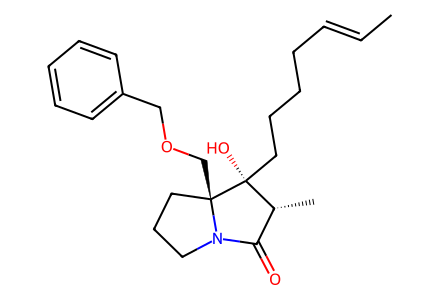
C/C=C/CCCC[C@@]1(O)[C@H](C)C(=O)N2CCC[C@@]21COCc1ccccc1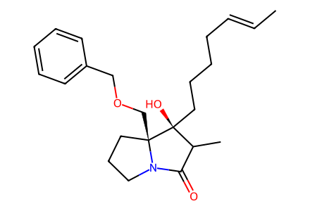
C/C=C/CCCC[C@]1(O)C(C)C(=O)N2CCC[C@@]21COCc1ccccc1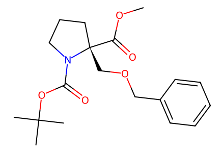
COC(=O)[C@@]1(COCc2ccccc2)CCCN1C(=O)OC(C)(C)C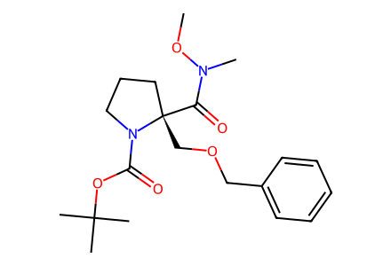
CON(C)C(=O)[C@@]1(COCc2ccccc2)CCCN1C(=O)OC(C)(C)C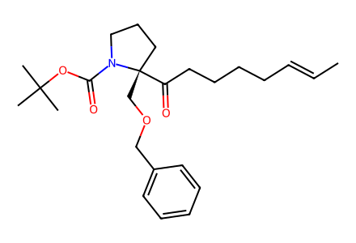
C/C=C/CCCCC(=O)[C@@]1(COCc2ccccc2)CCCN1C(=O)OC(C)(C)C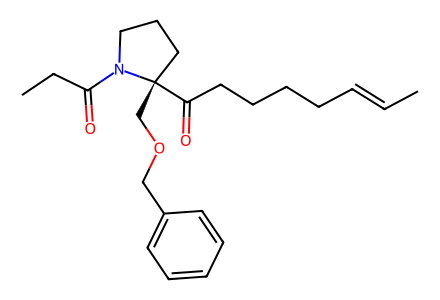
C/C=C/CCCCC(=O)[C@@]1(COCc2ccccc2)CCCN1C(=O)CC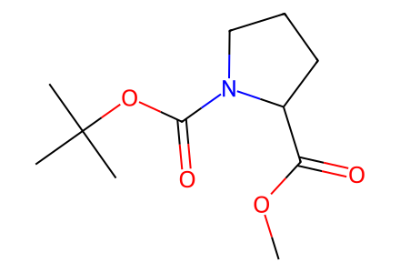
COC(=O)C1CCCN1C(=O)OC(C)(C)C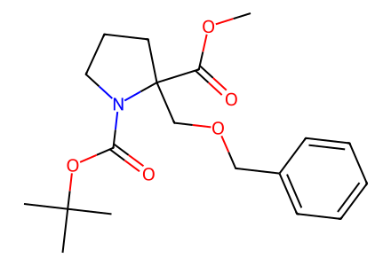
COC(=O)C1(COCc2ccccc2)CCCN1C(=O)OC(C)(C)C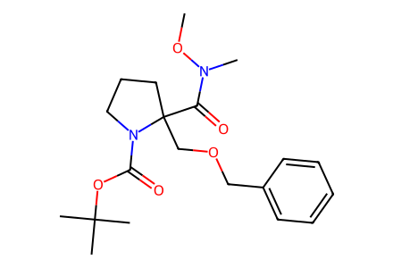
CON(C)C(=O)C1(COCc2ccccc2)CCCN1C(=O)OC(C)(C)C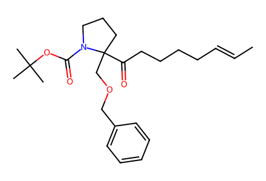
C/C=C/CCCCC(=O)C1(COCc2ccccc2)CCCN1C(=O)OC(C)(C)C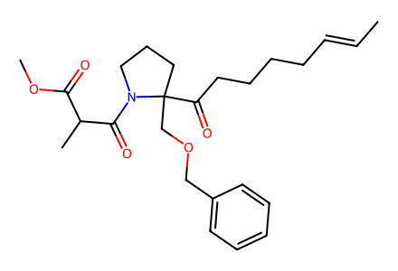
C/C=C/CCCCC(=O)C1(COCc2ccccc2)CCCN1C(=O)C(C)C(=O)OC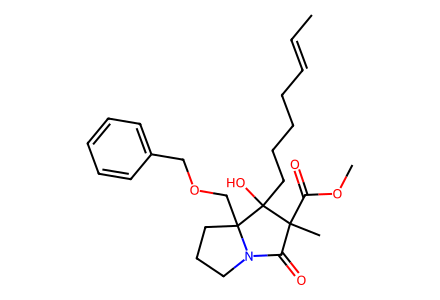
C/C=C/CCCCC1(O)C(C)(C(=O)OC)C(=O)N2CCCC21COCc1ccccc1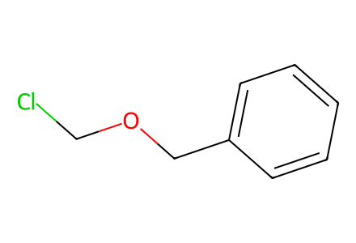
ClCOCc1ccccc1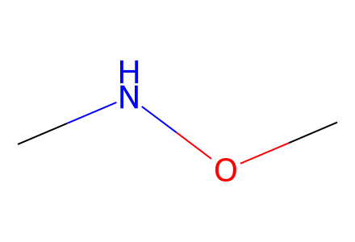
CNOC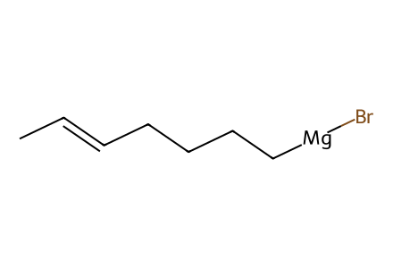
C/C=C/CCC[CH2][Mg][Br]
CCC(=O)Cl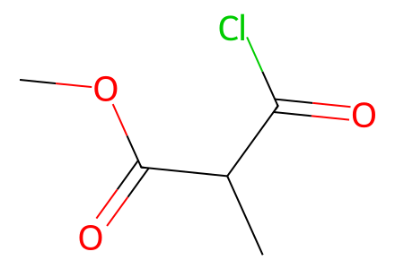
COC(=O)C(C)C(=O)Cl